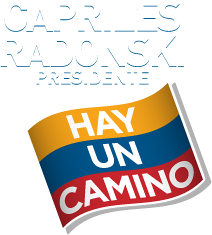
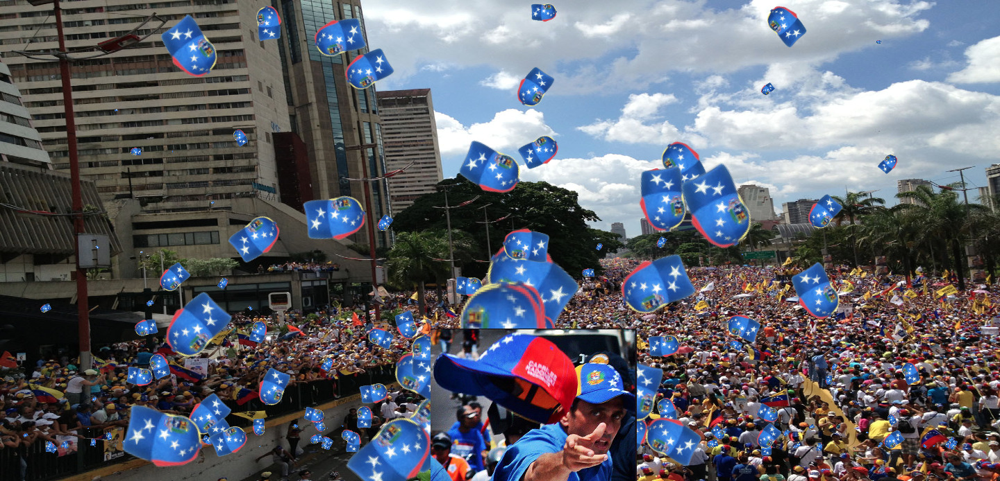

Esta es mi pequeña contribución a la campaña de Capriles Radonski, simplemente porque creo que hay un mejor camino para Venezuela. Estas viendo esto porque no tienes un navegador actual te recomiendo usar cual quiera de estos: Firefox, Chrome, Opera, Safari o IE 9+